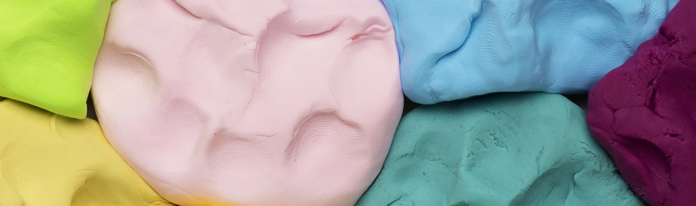

הוא חזר הביתה ולא הפסיק לדבר על הנורה. בערב כבר בנה לנו פנס מקרטון וחוט, ושאל אם אפשר להדליק אותו במרפסת.
ננועה, אמא של איתי מכיתה ב
חימר שנשאר בוגר: חפצים עגולים עם הילה פנימית ובטן, צבעים רוויים בתפקידים קבועים, כפתור שמתכווץ וקופץ, ומעגל חשמלי מחימר שמדליק נורה. בנוי כאתר חוג המצאות לילדים (עסק לדוגמה).
מתי משתמשים: ילדים, הורים, חינוך, חוגים, אונבורדינג ומוצרים חמים שרוצים ידיים ולא זכוכית: כל מקום שבו משטח שאפשר ללחוץ עליו הוא חלק מהמסר.
כל שפה פעילה היא עמוד ייחוס אמיתי של עסק שמתאים לה, עם תמונות, קופי ומהלך חתימה משלו, ונבדקה מול רף הסטודיו. העסק והתמונות הם דוגמה; בפרויקט לוקחים מהשפה את המתכון, מפת היישום והחתימה, וטובעים מהם עור מלא למותג. שפה בארכיון עדיין מוצגת על השלד המשותף הישן, ולא מוצעת בשאלון.
שמונה ילדים בקבוצה, מדריך אחד ושעה וחצי של ידיים בבצק. הם מפסלים מעגלים חשמליים מבצק שמוליך חשמל, ובסוף כל מפגש יש נורה שהדליקו בעצמם.
שיעור הניסיון הראשון בחינם, ואפשר לבוא עם חבר.

שלושה פרטים שהורים שואלים עליהם ראשונים, ואחריהם מה הם מספרים אחרי חודש.

הוא חזר הביתה ולא הפסיק לדבר על הנורה. בערב כבר בנה לנו פנס מקרטון וחוט, ושאל אם אפשר להדליק אותו במרפסת.
המדריך יודע לשאול את השאלה הנכונה ואז לשתוק. הבת שלי טעתה שלוש פעמים בחיבור, וכשהנורה נדלקה היא לא ויתרה על אף אחד מהניסיונות.
המספרים והציטוטים בעמוד הזה הם דוגמה להמחשת העיצוב, ולא נתוני עסק אמיתי.
סוללה, חוטי בצק שמוליכים חשמל ונורת לד קטנה. כל עוד החוט האחרון לא במקומו אין אור, ובשנייה שהוא נוגע, הנורה נדלקת.
מארז של שלוש סוללות AA, מתח נמוך ובטוח לידיים. המדריך בודק כל חיבור לפני שמדליקים.
בצק מלח, כמו זה שמכינים במטבח. הילדים מפסלים ממנו את הדרך שהחשמל עובר בה.
רגל בכל חוט. אם הכיוון נכון היא נדלקת, ואם לא, הופכים אותה ומנסים שוב.
המעגל מתחבר לבד כשמגיעים לכאן. אפשר לנתק ולחבר בעצמכם.
כל מסלול הוא מחזור של שנים עשר מפגשים, קבוצה של שמונה ומדריך שמכיר כל ילד בשם.
חוט, סוללה ונורה. בונים את המעגל הראשון ומסיימים בפנס מבצק שנדלק בחושך.
מוסיפים מנוע קטן ומתג. בונים צעצוע שזז, ומגלים למה הוא רועד ולא הולך ישר.
כל ילד בוחר בעיה מהבית ובונה אב טיפוס: אזעקה לדלת החדר, מנורה למגירה, מעמד לטלפון.

המחירים והמועדים בעמוד הזה הם דוגמה להמחשת העיצוב.

משאירים שם וטלפון, ואנחנו חוזרים עד סוף יום העבודה עם שני מועדים לבחירה.
בגרסה אמיתית היינו חוזרים אליכם עד סוף יום העבודה. זה דמו, ושום מידע לא נשלח.
הקוד כאן עומד בפני עצמו. כל טוקן עיצוב נושא ברירת מחדל, מחלקות העזר של המאגר מוטמעות בו, ותגי הסקריפט מסודרים לפי הסדר הנכון. פרויקט שמגדיר --accent או --line משלו יורש אותם אוטומטית. הרכיב הזה מסתמך על dir="rtl".
/* מחלקות עזר של המאגר שהרכיב הזה משתמש בהן */
.stage{padding:var(--sec, clamp(120px, 12vw, 260px)) var(--gutter, clamp(24px, 5vw, 96px));position:relative}
.stage.tight{padding-block:clamp(48px,5vw,90px)}
.stage.full{padding-inline:0}
/* S04 · קליימורפיזם */
@font-face{font-family:"MV Google Sans";src:url("https://liavwebdesign-spec.github.io/motion-vault/assets/fonts/google-sans.woff2") format("woff2");font-weight:400 700;font-display:swap}
.cwrap{container-type:inline-size}
.q{--ground:#FFF6EE;--paper:#FFFCF8;--pressed:#FFEBD8;--ink:#231A33;--muted:#5B4F6B;
--orange:#FF7F32;--orange-d:#E8701F;--teal:#38B9AE;--teal-d:#33A89D;--yellow:#FFC93C;--yellow-d:#EDB62C;--pink:#F7A8C0;--pink-d:#EE97B2;--blue:#86C8F5;--plum:#8B2F6E;--plum-d:#7D2A62;
--slate:#353C43;--slate-2:#2A3036;--plate:#3E464E;--on-dark:#FFF6EE;--on-dark-m:#D9D3DD;--field:#8A7060;--err:#B42318;
--hi:inset 0 6px 10px rgba(255,255,255,.55);--lo:inset 0 -8px 12px rgba(0,0,0,.1);
--r-card:32px;--r-img:40px;--ease:cubic-bezier(.2,.6,.2,1);--sec:112px;--gut:clamp(20px,4cqi,64px);--ring:var(--ink, #16182b);--sh:120 90 70;
background:var(--ground);color:var(--ink, #16182b);font-family:"MV Google Sans","Google Sans",system-ui,sans-serif;font-size:16px;line-height:1.65;overflow:clip;position:relative;isolation:isolate;-webkit-font-smoothing:antialiased}
.q *{box-sizing:border-box}
.q h1,.q h2,.q h3,.q p,.q ul,.q ol,.q figure{margin:0}
.q ul,.q ol{list-style:none;padding:0}
.q a{color:inherit;text-decoration:none}
.q img{display:block;max-width:100%}
.q [hidden]{display:none!important}
.q h1,.q h2{text-wrap:balance}
.q h1{font-size:58px;line-height:1.1;font-weight:700;letter-spacing:-.02em}
.q h2{font-size:40px;line-height:1.2;font-weight:700;letter-spacing:-.01em}
.q h3{font-size:20px;line-height:1.35;font-weight:700}
.q .lead{font-size:18px;line-height:1.6;color:var(--muted, #6a6d85);max-width:560px}
.q .micro{font-size:14px;line-height:1.5;color:var(--muted, #6a6d85)}
.q .eyebrow{display:inline-flex;align-items:center;gap:10px;font-size:14px;font-weight:700;line-height:1.2;color:var(--plum)}
.q .eyebrow i{width:14px;height:14px;border-radius:50%;background:var(--orange);box-shadow:inset 0 2px 3px rgba(255,255,255,.6),inset 0 -2px 3px rgba(0,0,0,.18)}
.q .on-dark{--ring:var(--on-dark)}
.q .on-dark .eyebrow{padding:6px 14px 6px 12px;border-radius:999px;background:var(--paper);color:var(--plum);box-shadow:var(--hi),var(--lo),0 8px 14px -6px rgba(0,0,0,.4)}
.q .on-dark .lead,.q .on-dark .micro{color:var(--on-dark-m)}
.q .ico{width:24px;height:24px;stroke:currentColor;fill:none;stroke-width:1.8;stroke-linecap:round;stroke-linejoin:round;flex:none;display:block}
.q .ico.s{width:20px;height:20px}
/* החימר: הילה פנימית למעלה, בטן כהה למטה, וצל נופל בצבע המשפחה של האובייקט */
.q .clay{box-shadow:var(--hi),var(--lo),0 var(--dy,14px) var(--bl,24px) -8px rgb(var(--sh) / .45)}
.q .s-teal{background:var(--teal);--sh:24 110 102}
.q .s-yellow{background:var(--yellow);--sh:150 100 0}
.q .s-pink{background:var(--pink);--sh:170 60 100}
.q .s-orange{background:var(--orange);--sh:190 80 10}
.q .s-blue{background:var(--blue);--sh:30 90 150}
.q .s-plum{background:var(--plum);color:var(--on-dark);--sh:70 10 50}
.q .s-paper{background:var(--paper);--sh:120 80 50}
/* כפתורים: שלוש רמות באותו גובה ורדיוס, ארבעה מצבים, והקפיץ החתום */
.q .btn{display:inline-flex;align-items:center;justify-content:center;gap:10px;min-height:52px;padding:14px 28px;border:0;border-radius:999px;background:var(--orange);color:var(--ink, #16182b);font:inherit;font-size:16px;font-weight:700;line-height:1;cursor:pointer;-webkit-tap-highlight-color:transparent;--sh:190 80 10;box-shadow:var(--hi),var(--lo),0 12px 20px -8px rgb(var(--sh) / .5);transition:background .18s var(--ease),transform .18s var(--ease),box-shadow .18s var(--ease),scale .12s var(--ease)}
.q .btn:hover{background:var(--orange-d);transform:translateY(-2px);box-shadow:var(--hi),var(--lo),0 18px 26px -10px rgb(var(--sh) / .55)}
.q .btn:active{scale:.96 .94;transform:none}
.q .btn:focus-visible{outline:3px solid var(--ring);outline-offset:3px}
.q .btn:disabled{opacity:.5;pointer-events:none}
.q .btn.sm{min-height:44px;padding:10px 24px;font-size:15px}
.q .btn.b2{background:var(--paper);--sh:120 80 50}
.q .btn.b2:hover{background:var(--pressed)}
.q .lnk{display:inline-flex;align-items:center;gap:8px;min-height:44px;padding:8px 0;font-size:16px;font-weight:700;line-height:1.2;color:var(--ink, #16182b);transition:color .18s var(--ease)}
.q .lnk .ico{width:20px;height:20px;transition:transform .18s var(--ease)}
.q .lnk:hover{color:var(--plum)}
.q .lnk:hover .ico{transform:translateX(-4px)}
.q .lnk:focus-visible{outline:3px solid var(--ring);outline-offset:3px;border-radius:8px}
.q .on-dark .lnk{color:var(--on-dark)}
.q .on-dark .lnk:hover{color:var(--yellow)}
@keyframes jelly{0%{scale:1}30%{scale:1.04 .96}55%{scale:.985 1.015}80%{scale:1.01 .99}100%{scale:1}}
@media (hover:hover) and (pointer:fine){.q .squish:hover{animation:jelly .45s cubic-bezier(.2,.6,.2,1)}}
.q .squish:active{animation:none}
/* שדות: שקועים, חמישה מצבים */
.q .fld{display:flex;flex-direction:column;gap:8px}
.q .fld label{font-size:14px;font-weight:500;line-height:1.2;color:var(--ink, #16182b)}
.q .in{font:inherit;font-size:16px;line-height:1.2;min-height:52px;width:100%;padding:14px 20px;border:1.5px solid var(--field);border-radius:20px;background:var(--pressed);color:var(--ink, #16182b);appearance:none;box-shadow:inset 0 4px 8px rgba(120,70,30,.14),inset 0 -2px 4px rgba(255,255,255,.8);transition:border-color .18s var(--ease),box-shadow .18s var(--ease),background .18s var(--ease)}
.q .in::placeholder{color:#6A5E78}
.q .in:focus,.q .in:focus-visible{outline:0;border-color:var(--ink, #16182b);background:#fff;box-shadow:inset 0 4px 8px rgba(120,70,30,.1),0 0 0 4px rgba(255,127,50,.45)}
.q select.in{padding-inline-end:20px;background-image:url("data:image/svg+xml,%3Csvg xmlns='http://www.w3.org/2000/svg' width='20' height='20' viewBox='0 0 24 24' fill='none' stroke='%23231A33' stroke-width='2' stroke-linecap='round' stroke-linejoin='round'%3E%3Cpath d='m6 9 6 6 6-6'/%3E%3C/svg%3E");background-repeat:no-repeat;background-position:left 18px center}
.q .fld .msg{display:none;align-items:center;gap:6px;font-size:14px;line-height:1.3;color:var(--err)}
.q .fld.err .msg{display:inline-flex}
.q .fld.err .in{border-color:var(--err)}
.q .in:disabled{background:#EFE3D8;color:var(--muted, #6a6d85);box-shadow:none}
/* תצלום: טיפול אחד לכל העמוד, רדיוס 40, אור פנימי ובטן כמו על חימר */
.q .pic{position:relative;overflow:hidden;border-radius:var(--r-img);box-shadow:0 28px 44px -16px rgba(35,26,51,.45)}
.q .pic img{width:100%;height:100%;object-fit:cover;border-radius:inherit;transition:transform .4s var(--ease)}
.q .pic::after{content:"";position:absolute;inset:0;border-radius:inherit;pointer-events:none;box-shadow:inset 0 8px 14px rgba(255,255,255,.3),inset 0 -12px 18px rgba(0,0,0,.2)}
@media (hover:hover) and (pointer:fine){.q .pic:hover img{transform:scale(1.03)}}
/* צ'יפ חימר */
.q .chip{position:absolute;z-index:2;display:inline-flex;align-items:center;gap:8px;padding:8px 16px 8px 14px;border-radius:999px;font-size:14px;font-weight:500;line-height:1;color:var(--ink, #16182b);white-space:nowrap}
.q .chip .ico{width:20px;height:20px;margin-top:-1px}
/* reveal: keyframes, 16px, 0.5s. בלי JS הכל גלוי; ה-class js הוא השער היחיד להסתרה */
.q.js .reveal{opacity:0}
.q.js .reveal.is-in{opacity:1;animation:qrev .5s cubic-bezier(.2,.6,.2,1) both;animation-delay:calc(var(--i,0) * 70ms)}
@keyframes qrev{from{opacity:0;translate:0 16px}to{opacity:1;translate:0 0}}
@media (prefers-reduced-motion:reduce){.q.js .reveal{opacity:1}.q.js .reveal.is-in{animation:none}.q .rv,.q .hero-vis .pic,.q .chip{animation:none!important}.q .btn,.q .lnk .ico,.q .pic img,.q .row,.q .tile{transition:none}.q .squish:hover{animation:none}.q .btn:hover,.q .row:hover,.q .tile:hover{transform:none}}
.q .sec{padding:var(--sec, clamp(120px, 12vw, 260px)) var(--gut)}
.q .wrap{max-width:1200px;margin-inline:auto}
.q .head{display:flex;flex-direction:column;align-items:flex-start;gap:16px;max-width:640px;margin-bottom:56px}
.q section[id]{scroll-margin-top:96px}
@container (max-width:1023px){.q{--sec:88px}.q h1{font-size:46px}.q h2{font-size:34px}}
@container (max-width:767px){.q{--sec:64px}.q h1{font-size:36px}.q h2{font-size:28px}.q .lead{font-size:17px}.q .head{margin-bottom:40px}}
.q .skip{position:absolute;inset-inline-start:16px;top:12px;z-index:50;padding:12px 20px;border-radius:999px;background:var(--ink, #16182b);color:var(--on-dark);font-weight:700;transform:translateY(-120px);transition:transform .18s var(--ease)}
.q .skip:focus{transform:translateY(0)}
/* הדר */
.q .hd{position:sticky;top:0;z-index:30;height:72px;padding-inline:var(--gut);display:flex;align-items:center;gap:32px;background:var(--ground);transition:box-shadow .24s var(--ease)}
.q .hd.is-scrolled{box-shadow:0 14px 24px -16px rgba(35,26,51,.35)}
.q .logo{display:inline-flex;align-items:center;gap:12px;min-height:44px;font-size:22px;font-weight:700;line-height:1;color:var(--ink, #16182b)}
.q .mark{position:relative;width:40px;height:28px;flex:none}
.q .mark i{position:absolute;top:0;width:28px;height:28px;border-radius:50%;box-shadow:inset 0 4px 6px rgba(255,255,255,.55),inset 0 -5px 7px rgba(0,0,0,.14),0 6px 10px -4px rgba(35,26,51,.35)}
.q .mark i:first-child{inset-inline-start:0;background:var(--orange)}
.q .mark i:last-child{inset-inline-end:0;background:var(--teal)}
.q .hd nav{display:flex;gap:4px;margin-inline:auto}
.q .hd nav a{display:inline-flex;align-items:center;min-height:44px;padding:10px 16px;border-radius:999px;font-size:15px;font-weight:500;line-height:1;color:var(--muted, #6a6d85);transition:background .18s var(--ease),color .18s var(--ease)}
.q .hd nav a:hover{background:var(--pressed);color:var(--ink, #16182b)}
.q .hd nav a:focus-visible{outline:3px solid var(--ring);outline-offset:2px}
.q .hd .btn{margin-inline-start:auto}
.q .hd nav+.btn{margin-inline-start:0}
/* הירו */
.q .hero{position:relative;z-index:1;padding:32px var(--gut) 48px}
.q .hero-in{max-width:1200px;margin-inline:auto;display:grid;grid-template-columns:minmax(0,1fr) minmax(0,440px);gap:64px;align-items:center}
.q .hero-copy{display:flex;flex-direction:column;align-items:flex-start;gap:24px}
.q .hero-copy h1{max-width:600px}
.q .ctas{display:flex;flex-wrap:wrap;align-items:center;gap:12px 24px}
.q .hero-copy .micro{margin-top:-8px}
.q .rv{animation:qrev .5s cubic-bezier(.2,.6,.2,1) both;animation-delay:calc(var(--i,0) * 70ms)}
.q .hero-vis{position:relative;margin-bottom:-96px}
.q .hero-vis .pic{aspect-ratio:4/5;animation:open 1.1s cubic-bezier(.2,.6,.2,1) both}
@keyframes open{0%{scale:.92;opacity:0}55%{scale:1.03;opacity:1}100%{scale:1;opacity:1}}
.q .hero-vis .chip{animation:qrev .5s cubic-bezier(.2,.6,.2,1) both}
.q .hero-vis .c1{inset-inline-start:-40px;bottom:56px;background:var(--yellow);--sh:150 100 0;animation-delay:.8s}
.q .hero-vis .c2{inset-inline-end:-16px;top:40px;background:var(--teal);--sh:24 110 102;animation-delay:.88s}
/* הוכחה */
.q .tiles{display:grid;grid-template-columns:repeat(3,1fr);gap:24px;margin-bottom:24px}
.q .tile{display:flex;flex-direction:column;gap:12px;min-height:200px;padding:32px;border-radius:var(--r-card);transition:background .24s var(--ease),transform .24s var(--ease)}
.q .tile b{font-size:72px;line-height:1;font-weight:700;letter-spacing:-.02em;font-variant-numeric:tabular-nums}
.q .tile span{font-size:18px;font-weight:500;line-height:1.35;max-width:220px}
.q .tile.s-teal:hover{background:var(--teal-d)}.q .tile.s-yellow:hover{background:var(--yellow-d)}.q .tile.s-pink:hover{background:var(--pink-d)}
.q .card.hv:hover{transform:translateY(-2px)}
.q .voices{display:grid;grid-template-columns:minmax(0,360px) minmax(0,1fr);gap:24px}
.q .voices .pic{min-height:360px}
.q .quotes{display:flex;flex-direction:column;gap:24px}
.q .quote{flex:1;display:flex;flex-direction:column;justify-content:space-between;gap:20px;padding:32px;border-radius:var(--r-card)}
.q .quote p{font-size:20px;line-height:1.55;max-width:560px}
.q .who{display:flex;align-items:center;gap:14px;font-size:14px;line-height:1.35;color:var(--muted, #6a6d85)}
.q .who b{display:grid;place-items:center;width:44px;height:44px;border-radius:50%;font-size:18px;font-weight:700;line-height:1;color:var(--ink, #16182b);flex:none}
.q .proof .note{margin-top:32px;max-width:600px}
.q .join-card .micro{max-width:480px}
/* הסיגנטורה: במה כהה עם מעגל חימר */
.q .stage{margin:0 clamp(12px,2cqi,24px);padding:var(--sec, clamp(120px, 12vw, 260px)) var(--gut);border-radius:56px;background:var(--slate);color:var(--on-dark)}
.q .stage .wrap{display:grid;grid-template-columns:minmax(0,5fr) minmax(0,7fr);gap:64px;align-items:center}
.q .lab-copy{display:flex;flex-direction:column;align-items:flex-start;gap:20px}
.q .steps{display:flex;flex-direction:column;gap:20px;margin-top:12px}
.q .steps li{display:flex;gap:16px;align-items:flex-start}
.q .steps .num{display:grid;place-items:center;width:44px;height:44px;border-radius:50%;font-size:18px;font-weight:700;line-height:1;color:var(--ink, #16182b);flex:none;--dy:8px;--bl:14px}
.q .steps h3{color:var(--on-dark);margin-bottom:4px}
.q .steps p{font-size:16px;line-height:1.6;color:var(--on-dark-m);max-width:440px}
.q .plate{position:relative;aspect-ratio:600/360;padding:24px;border-radius:var(--r-img);background:var(--plate);box-shadow:inset 0 10px 22px rgba(0,0,0,.35),inset 0 -8px 14px rgba(255,255,255,.07)}
.q .scene-svg{display:block;width:100%;height:100%;overflow:visible}
.q .status{position:absolute;inset-block-start:20px;inset-inline-start:20px;z-index:2;display:inline-flex;align-items:center;gap:8px;padding:8px 16px 8px 14px;border-radius:999px;background:var(--paper);color:var(--ink, #16182b);font-size:14px;font-weight:500;line-height:1;--sh:0 0 0}
.q .status .ico{width:20px;height:20px;margin-top:-1px}
.q .lab-ctl{display:flex;flex-wrap:wrap;align-items:center;gap:16px 24px;margin-top:32px}
.q:not(.js) .lab-ctl{display:none}
.q .plug{transform-box:fill-box;transform-origin:center;transition:transform .3s var(--ease)}
.q.js .scene:not(.is-on) .plug{transform:translateY(-72px)}
.q.js .scene.is-on .plug{animation:plugin .5s cubic-bezier(.2,.6,.2,1)}
@keyframes plugin{0%{transform:translateY(-72px)}70%{transform:translateY(3px)}100%{transform:translateY(0)}}
.q .bulb{transform-box:fill-box;transform-origin:center}
.q .bulb-fill{fill:#FFE066;transition:fill .3s var(--ease) .2s}
.q.js .scene:not(.is-on) .bulb-fill{fill:#9C9470;transition-delay:0s}
.q .halo{opacity:1;transition:opacity .45s var(--ease) .2s}
.q.js .scene:not(.is-on) .halo{opacity:0;transition-delay:0s}
.q.js .scene.is-on .bulb{animation:pop .45s cubic-bezier(.2,.6,.2,1) .3s}
@keyframes pop{0%{scale:1}50%{scale:1.05}100%{scale:1}}
@media (prefers-reduced-motion:reduce){.q .plug,.q .bulb,.q .scene.is-on .plug,.q .scene.is-on .bulb{animation:none!important;transition:none}.q .bulb-fill,.q .halo{transition:none}}
/* המסלולים */
.q .offer .wrap{display:grid;grid-template-columns:minmax(0,1fr) minmax(0,360px);gap:48px;align-items:start}
.q .offer .head{grid-column:1/-1;margin-bottom:0}
.q .rows{display:flex;flex-direction:column;gap:20px}
.q .row{display:grid;grid-template-columns:72px minmax(0,1fr);gap:8px 24px;align-items:center;padding:28px 32px;border-radius:var(--r-card);transition:background .24s var(--ease),transform .24s var(--ease)}
.q .row:hover{background:var(--pressed)}
.q .row .ball{grid-row:1/3;display:grid;place-items:center;width:72px;height:72px;border-radius:50%;font-size:22px;font-weight:700;line-height:1;color:var(--ink, #16182b);--dy:10px;--bl:16px}
.q .row .txt{display:flex;flex-direction:column;gap:6px}
.q .row .txt p{font-size:16px;line-height:1.6;color:var(--muted, #6a6d85);max-width:460px}
.q .row .meta{display:flex;flex-wrap:wrap;align-items:center;gap:6px 24px;grid-column:2}
.q .row .meta span{display:inline-flex;align-items:center;gap:8px;font-size:14px;font-weight:500;line-height:1.3;color:var(--ink, #16182b)}
.q .row .meta .ico{color:var(--plum)}
.q .row .meta b{font-size:14px;font-weight:700;line-height:1.3}
.q .row .meta .lnk{margin-inline-start:auto}
.q .offer-pic{position:relative;align-self:stretch;min-height:420px}
.q .offer-pic .pic{height:100%}
.q .offer-pic .chip{inset-inline-start:-32px;bottom:48px;background:var(--pink);--sh:170 60 100}
.q .offer .note{grid-column:1/-1;margin-top:-8px}
/* ההרשמה השקטה */
.q .join{padding-top:0}
.q .join .wrap{position:relative}
.q .join .band{height:360px}
.q .join-card{position:relative;z-index:2;max-width:720px;margin:-160px auto 0;padding:40px;border-radius:44px;display:flex;flex-direction:column;gap:20px}
.q .join-card .lead{max-width:520px}
.q .form{display:flex;flex-direction:column;gap:20px;margin-top:4px}
.q .form .row2{display:grid;grid-template-columns:1fr 1fr;gap:20px}
.q .form .btn{width:100%}
.q .done{display:flex;flex-direction:column;align-items:flex-start;gap:12px}
.q .done .okb{display:grid;place-items:center;width:56px;height:56px;border-radius:50%;color:var(--ink, #16182b)}
/* פוטר */
.q .ft{margin-top:0;padding:72px var(--gut) 40px;border-radius:56px 56px 0 0;background:var(--slate-2);color:var(--on-dark-m)}
.q .ft-top{display:grid;grid-template-columns:1.3fr 1fr 1fr 1fr;gap:40px;max-width:1200px;margin-inline:auto}
.q .ft-brand{display:flex;flex-direction:column;align-items:flex-start;gap:16px}
.q .ft .logo{color:var(--on-dark)}
.q .ft-brand p{font-size:15px;line-height:1.6;max-width:300px}
.q .chain{display:flex;gap:8px}
.q .chain i{width:20px;height:20px;border-radius:50%;box-shadow:inset 0 3px 5px rgba(255,255,255,.5),inset 0 -4px 6px rgba(0,0,0,.18)}
.q .ft-col{display:flex;flex-direction:column;font-size:15px;line-height:1.6}
.q .ft-h{font-size:14px;font-weight:700;line-height:1.3;color:var(--on-dark);margin-bottom:8px}
.q .ft-col span:not(.ft-h),.q .ft-col address{padding-block:12px;font-style:normal}
.q .ft-col a,.q .ft-bot a{display:inline-block;padding-block:12px;color:var(--on-dark-m);transition:color .18s var(--ease)}
.q .ft-col a[href^="tel"]{unicode-bidi:isolate;align-self:flex-start}
.q .ft-col a:hover,.q .ft-bot a:hover{color:var(--yellow)}
.q .ft-col a:focus-visible,.q .ft-bot a:focus-visible{outline:3px solid var(--on-dark);outline-offset:2px;border-radius:4px}
.q .ft-bot{display:flex;align-items:center;justify-content:space-between;flex-wrap:wrap;gap:8px 32px;max-width:1200px;margin:48px auto 0;font-size:14px}
.q .ft-bot nav{display:flex;gap:24px;flex-wrap:wrap}
@container (max-width:1023px){.q .hero-in{gap:40px}.q .stage .wrap{grid-template-columns:1fr;gap:48px}.q .offer .wrap{grid-template-columns:1fr}.q .offer-pic{min-height:0;aspect-ratio:16/10}.q .offer-pic .chip{inset-inline-start:24px;bottom:-16px}.q .ft-top{grid-template-columns:1fr 1fr}.q .tile b{font-size:56px}.q .voices{grid-template-columns:minmax(0,280px) minmax(0,1fr)}}
@container (max-width:767px){
.q .hd{gap:16px}.q .hd nav{display:none}.q .hd .btn,.q .hd nav+.btn{margin-inline-start:auto}
.q .hero{padding:24px var(--gut) 40px;min-height:calc(100svh - 72px);display:flex;align-items:center}
.q .hero-in{grid-template-columns:1fr;gap:32px;width:100%}
.q .hero-copy{gap:20px}
.q .ctas{flex-direction:column;align-items:stretch;gap:4px;width:100%}.q .ctas .btn{width:100%}.q .ctas .lnk{justify-content:center}
.q .hero-vis{margin-bottom:0}.q .hero-vis .pic{aspect-ratio:2/1}.q .hero-vis .pic img{object-position:50% 78%}
.q .hero-vis .c1{display:none}.q .hero-vis .c2{inset-inline-end:12px;top:-16px}
.q .tiles{grid-template-columns:1fr;gap:16px}
.q .tile{flex-direction:row;align-items:center;gap:20px;min-height:0;padding:24px 28px}.q .tile b{font-size:56px;min-width:84px}
.q .voices{grid-template-columns:1fr}.q .voices .pic{min-height:0;aspect-ratio:16/10}.q .voices .pic img{object-position:50% 78%}
.q .quote{padding:28px}
.q .stage{border-radius:40px}
.q .plate{padding:16px;border-radius:32px}
.q .status{inset-block-start:12px;inset-inline-start:12px}
.q .lab-ctl .btn{width:100%}
.q .row{grid-template-columns:1fr;padding:24px}.q .row .ball{grid-row:auto;width:64px;height:64px}.q .row .meta{grid-column:1}.q .row .meta .lnk{margin-inline-start:0;width:100%}
.q .join .band{height:240px}
.q .join-card{margin-top:-96px;padding:28px;border-radius:32px}
.q .form .row2{grid-template-columns:1fr}
.q .ft{padding-top:56px}.q .ft-top{grid-template-columns:1fr;gap:32px}.q .ft-bot{margin-top:32px}.q .ft-bot nav{gap:16px}}
@container (min-width:768px) and (max-width:899px){.q .hero-in{grid-template-columns:1fr;gap:40px}.q .hero-copy h1{max-width:none}.q .hero-vis{margin-bottom:0}.q .hero-vis .pic{aspect-ratio:2/1}.q .hero-vis .pic img{object-position:50% 78%}.q .hero-vis .c1{display:none}.q .hero-vis .c2{inset-inline-end:24px;top:-16px}}
@media (max-width:500px) and (max-height:800px){.q .hero{padding:16px var(--gut) 24px}.q .hero-in{gap:24px}.q .hero-copy{gap:16px}.q .hero-copy .micro{margin-top:-4px}.q .hero-copy .lead{font-size:16px}.q .hero-vis .pic{aspect-ratio:12/5}}<div class="cwrap sk-s04"><div class="q" id="s04-top">
<a class="skip" href="#s04-main">לדלג לתוכן</a>
<header class="hd"><a class="logo" href="#s04-top" aria-label="מעגלים, לראש הדף"><span class="mark" aria-hidden="true"><i></i><i></i></span>מעגלים</a><nav aria-label="ראשי"><a href="#lab">איך מדליקים</a><a href="#program">המסלולים</a><a href="#proof">הורים מספרים</a></nav><a class="btn sm squish" href="#join">שיעור ניסיון</a></header>
<main id="s04-main">
<section class="hero"><div class="hero-in">
<div class="hero-copy">
<span class="eyebrow rv" style="--i:0"><i></i>מעגלים, חוג המצאות לכיתות א עד ו בכפר סבא</span>
<h1 class="rv" style="--i:1">אחרי בית הספר הילדים בונים משהו שנדלק</h1>
<p class="lead rv" style="--i:2">שמונה ילדים בקבוצה, מדריך אחד ושעה וחצי של ידיים בבצק. הם מפסלים מעגלים חשמליים מבצק שמוליך חשמל, ובסוף כל מפגש יש נורה שהדליקו בעצמם.</p>
<div class="ctas rv" style="--i:3"><a class="btn squish" href="#join">לשריין שיעור ניסיון</a><a class="lnk" href="#lab">לראות איך נדלקת נורה<svg class="ico" viewBox="0 0 24 24" aria-hidden="true"><path d="M19 12H5"/><path d="m12 19-7-7 7-7"/></svg></a></div>
<p class="micro rv" style="--i:4">שיעור הניסיון הראשון בחינם, ואפשר לבוא עם חבר.</p>
</div>
<div class="hero-vis"><figure class="pic"><img src="https://liavwebdesign-spec.github.io/motion-vault/assets/media/real/s04/hero-monster.webp" width="1200" height="1500" alt="מפלצוני בצק קטנים בטורקיז עם כדורים כתומים, מונחים על רקע אפור כהה" fetchpriority="high"></figure>
<span class="chip c1 clay"><svg class="ico s" viewBox="0 0 24 24" aria-hidden="true"><circle cx="9" cy="8" r="3.2"/><path d="M3 20c0-3.3 2.7-6 6-6s6 2.7 6 6"/><circle cx="17" cy="9" r="2.4"/><path d="M17 14c2.5 0 4.5 2 4.5 4.5"/></svg>שמונה ילדים בקבוצה</span><span class="chip c2 clay"><svg class="ico s" viewBox="0 0 24 24" aria-hidden="true"><path d="M9 18h6"/><path d="M10 21h4"/><path d="M12 3a6 6 0 0 0-3.6 10.8c.6.5 1 1.2 1 2V16h5.2v-.2c0-.8.4-1.5 1-2A6 6 0 0 0 12 3z"/></svg>נורה בכל מפגש</span></div>
</div></section>
<section class="sec proof" id="proof"><div class="wrap">
<div class="head reveal"><span class="eyebrow"><i></i>מה קורה בחוג</span><h2>קבוצה קטנה שבנויה לידיים</h2><p class="lead">שלושה פרטים שהורים שואלים עליהם ראשונים, ואחריהם מה הם מספרים אחרי חודש.</p></div>
<div class="tiles">
<div class="tile card hv s-teal clay squish reveal" style="--i:0"><b data-count="8">8</b><span>ילדים בקבוצה, לא יותר</span></div>
<div class="tile card hv s-yellow clay squish reveal" style="--i:1"><b data-count="12">12</b><span>מפגשים במחזור אחד</span></div>
<div class="tile card hv s-pink clay squish reveal" style="--i:2"><b data-count="90">90</b><span>דקות של עבודה בידיים</span></div>
</div>
<div class="voices">
<figure class="pic reveal"><img src="https://liavwebdesign-spec.github.io/motion-vault/assets/media/real/s04/tusk.webp" width="900" height="1125" alt="כדור בצק בטורקיז עם ניבים לבנים על רקע ורוד" loading="lazy"></figure>
<div class="quotes">
<article class="quote s-paper clay reveal" style="--i:0"><p>הוא חזר הביתה ולא הפסיק לדבר על הנורה. בערב כבר בנה לנו פנס מקרטון וחוט, ושאל אם אפשר להדליק אותו במרפסת.</p><div class="who"><b class="s-orange clay" aria-hidden="true">נ</b><span>נועה, אמא של איתי מכיתה ב</span></div></article>
<article class="quote s-paper clay reveal" style="--i:1"><p>המדריך יודע לשאול את השאלה הנכונה ואז לשתוק. הבת שלי טעתה שלוש פעמים בחיבור, וכשהנורה נדלקה היא לא ויתרה על אף אחד מהניסיונות.</p><div class="who"><b class="s-blue clay" aria-hidden="true">ר</b><span>רונית, אמא של מאיה מכיתה ד</span></div></article>
</div></div>
<p class="micro note">המספרים והציטוטים בעמוד הזה הם דוגמה להמחשת העיצוב, ולא נתוני עסק אמיתי.</p>
</div></section>
<section class="stage on-dark" id="lab" aria-labelledby="lab-h"><div class="wrap">
<div class="lab-copy">
<span class="eyebrow reveal"><i></i>השיעור הראשון בכל מסלול</span>
<h2 id="lab-h" class="reveal">נורה נדלקת כשהמעגל סגור</h2>
<p class="lead reveal">סוללה, חוטי בצק שמוליכים חשמל ונורת לד קטנה. כל עוד החוט האחרון לא במקומו אין אור, ובשנייה שהוא נוגע, הנורה נדלקת.</p>
<ol class="steps">
<li class="reveal" style="--i:0"><span class="num s-teal clay">1</span><div><h3>סוללה קטנה</h3><p>מארז של שלוש סוללות AA, מתח נמוך ובטוח לידיים. המדריך בודק כל חיבור לפני שמדליקים.</p></div></li>
<li class="reveal" style="--i:1"><span class="num s-pink clay">2</span><div><h3>בצק שמוליך חשמל</h3><p>בצק מלח, כמו זה שמכינים במטבח. הילדים מפסלים ממנו את הדרך שהחשמל עובר בה.</p></div></li>
<li class="reveal" style="--i:2"><span class="num s-yellow clay">3</span><div><h3>נורה עם שתי רגליים</h3><p>רגל בכל חוט. אם הכיוון נכון היא נדלקת, ואם לא, הופכים אותה ומנסים שוב.</p></div></li>
</ol>
</div>
<div class="lab-scene reveal">
<div class="plate scene is-on"><span class="status clay" aria-live="polite"><svg class="ico s" viewBox="0 0 24 24" aria-hidden="true"><path d="M9 18h6"/><path d="M10 21h4"/><path d="M12 3a6 6 0 0 0-3.6 10.8c.6.5 1 1.2 1 2V16h5.2v-.2c0-.8.4-1.5 1-2A6 6 0 0 0 12 3z"/></svg><span data-status>הנורה דולקת</span></span><svg class="scene-svg" viewBox="0 0 600 360" role="img" aria-label="איור: סוללה כחולה-ירקרקה, חוט מבצק ורוד עם חוליה כחולה ונורה צהובה, מחוברים למעגל סגור">
<defs>
<linearGradient id="s04-clay" x1="0" y1="0" x2="0" y2="1"><stop offset="0" stop-color="#fff" stop-opacity=".5"/><stop offset=".4" stop-color="#fff" stop-opacity="0"/><stop offset=".7" stop-color="#000" stop-opacity="0"/><stop offset="1" stop-color="#000" stop-opacity=".2"/></linearGradient>
<radialGradient id="s04-sphere" cx=".38" cy=".3" r=".8"><stop offset="0" stop-color="#fff" stop-opacity=".55"/><stop offset=".45" stop-color="#fff" stop-opacity="0"/><stop offset="1" stop-color="#000" stop-opacity=".22"/></radialGradient>
<radialGradient id="s04-halo"><stop offset="0" stop-color="#FFE066" stop-opacity=".62"/><stop offset="1" stop-color="#FFE066" stop-opacity="0"/></radialGradient>
<filter id="s04-blur" x="-30%" y="-30%" width="160%" height="170%"><feGaussianBlur stdDeviation="7"/></filter>
<path id="s04-w1" d="M110 126V56H250" fill="none" stroke-linecap="round" stroke-linejoin="round"/><path id="s04-w2" d="M350 56H490V126" fill="none" stroke-linecap="round" stroke-linejoin="round"/><path id="s04-w3" d="M110 244V320H490V262" fill="none" stroke-linecap="round" stroke-linejoin="round"/><path id="s04-pl" d="M254 56H346" fill="none" stroke-linecap="round" stroke-linejoin="round"/>
</defs>
<circle class="halo" cx="490" cy="176" r="158" fill="url(#s04-halo)"/>
<g filter="url(#s04-blur)" opacity=".45" transform="translate(0 12)" stroke="#000" stroke-width="22" fill="none" stroke-linecap="round" stroke-linejoin="round"><use href="#s04-w1"/><use href="#s04-w2"/><use href="#s04-w3"/></g>
<g ><use href="#s04-w1" stroke="#F7A8C0" stroke-width="22"/><use href="#s04-w1" stroke="#000" stroke-opacity=".14" stroke-width="9" transform="translate(4 5)"/><use href="#s04-w1" stroke="#fff" stroke-opacity=".42" stroke-width="8" transform="translate(-4 -5)"/></g><g ><use href="#s04-w2" stroke="#F7A8C0" stroke-width="22"/><use href="#s04-w2" stroke="#000" stroke-opacity=".14" stroke-width="9" transform="translate(4 5)"/><use href="#s04-w2" stroke="#fff" stroke-opacity=".42" stroke-width="8" transform="translate(-4 -5)"/></g><g ><use href="#s04-w3" stroke="#F7A8C0" stroke-width="22"/><use href="#s04-w3" stroke="#000" stroke-opacity=".14" stroke-width="9" transform="translate(4 5)"/><use href="#s04-w3" stroke="#fff" stroke-opacity=".42" stroke-width="8" transform="translate(-4 -5)"/></g>
<g class="plug"><g ><use href="#s04-pl" stroke="#86C8F5" stroke-width="22"/><use href="#s04-pl" stroke="#000" stroke-opacity=".14" stroke-width="9" transform="translate(4 5)"/><use href="#s04-pl" stroke="#fff" stroke-opacity=".42" stroke-width="8" transform="translate(-4 -5)"/></g></g>
<g>
<rect x="56" y="124" width="108" height="150" rx="30" fill="#000" opacity=".45" filter="url(#s04-blur)" transform="translate(0 14)"/>
<rect x="56" y="112" width="108" height="150" rx="30" fill="#38B9AE"/><rect x="56" y="112" width="108" height="150" rx="30" fill="url(#s04-clay)"/>
<path d="M110 148v28M96 162h28" stroke="#231A33" stroke-width="7" stroke-linecap="round" fill="none"/><path d="M96 218h28" stroke="#231A33" stroke-width="7" stroke-linecap="round" fill="none"/>
</g>
<g class="bulb">
<rect x="452" y="252" width="76" height="44" rx="20" fill="#000" opacity=".45" filter="url(#s04-blur)" transform="translate(0 10)"/>
<rect x="452" y="226" width="76" height="44" rx="20" fill="#8B2F6E"/><rect x="452" y="226" width="76" height="44" rx="20" fill="url(#s04-clay)"/>
<circle cx="490" cy="176" r="58" class="bulb-fill"/><circle cx="490" cy="176" r="58" fill="url(#s04-sphere)"/>
<ellipse cx="468" cy="152" rx="16" ry="9" fill="#fff" opacity=".55" transform="rotate(-32 468 152)"/>
</g>
</svg></div>
<div class="lab-ctl"><button class="btn squish" type="button" data-toggle><svg class="ico s" viewBox="0 0 24 24" aria-hidden="true"><path d="M10 14a4 4 0 0 0 5.7 0l3-3a4 4 0 0 0-5.7-5.7l-1 1"/><path d="M14 10a4 4 0 0 0-5.7 0l-3 3A4 4 0 0 0 11 18.7l1-1"/></svg><span>לנתק את החוט</span></button><p class="micro">המעגל מתחבר לבד כשמגיעים לכאן. אפשר לנתק ולחבר בעצמכם.</p></div>
</div>
</div></section>
<section class="sec offer" id="program"><div class="wrap">
<div class="head reveal"><span class="eyebrow"><i></i>המסלולים</span><h2>שלושה מסלולים, לפי הגיל</h2><p class="lead">כל מסלול הוא מחזור של שנים עשר מפגשים, קבוצה של שמונה ומדריך שמכיר כל ילד בשם.</p></div>
<div class="rows">
<article class="row card hv s-paper clay squish reveal" style="--i:0"><span class="ball s-teal clay">א-ב</span><div class="txt"><h3>מדליקים</h3><p>חוט, סוללה ונורה. בונים את המעגל הראשון ומסיימים בפנס מבצק שנדלק בחושך.</p></div><div class="meta"><span><svg class="ico s" viewBox="0 0 24 24" aria-hidden="true"><rect x="3.5" y="5" width="17" height="15" rx="4"/><path d="M8 3v4M16 3v4M3.5 10h17"/></svg>ימי ראשון</span><span><svg class="ico s" viewBox="0 0 24 24" aria-hidden="true"><circle cx="12" cy="12" r="9"/><path d="M12 7v5l3 2"/></svg>15:00 עד 16:30</span><b>₪420 לחודש</b><a class="lnk" href="#join">לשריין מקום<svg class="ico" viewBox="0 0 24 24" aria-hidden="true"><path d="M19 12H5"/><path d="m12 19-7-7 7-7"/></svg></a></div></article>
<article class="row card hv s-paper clay squish reveal" style="--i:1"><span class="ball s-yellow clay">ג-ד</span><div class="txt"><h3>מזיזים</h3><p>מוסיפים מנוע קטן ומתג. בונים צעצוע שזז, ומגלים למה הוא רועד ולא הולך ישר.</p></div><div class="meta"><span><svg class="ico s" viewBox="0 0 24 24" aria-hidden="true"><rect x="3.5" y="5" width="17" height="15" rx="4"/><path d="M8 3v4M16 3v4M3.5 10h17"/></svg>ימי שני</span><span><svg class="ico s" viewBox="0 0 24 24" aria-hidden="true"><circle cx="12" cy="12" r="9"/><path d="M12 7v5l3 2"/></svg>15:00 עד 16:30</span><b>₪420 לחודש</b><a class="lnk" href="#join">לשריין מקום<svg class="ico" viewBox="0 0 24 24" aria-hidden="true"><path d="M19 12H5"/><path d="m12 19-7-7 7-7"/></svg></a></div></article>
<article class="row card hv s-paper clay squish reveal" style="--i:2"><span class="ball s-pink clay">ה-ו</span><div class="txt"><h3>ממציאים</h3><p>כל ילד בוחר בעיה מהבית ובונה אב טיפוס: אזעקה לדלת החדר, מנורה למגירה, מעמד לטלפון.</p></div><div class="meta"><span><svg class="ico s" viewBox="0 0 24 24" aria-hidden="true"><rect x="3.5" y="5" width="17" height="15" rx="4"/><path d="M8 3v4M16 3v4M3.5 10h17"/></svg>ימי רביעי</span><span><svg class="ico s" viewBox="0 0 24 24" aria-hidden="true"><circle cx="12" cy="12" r="9"/><path d="M12 7v5l3 2"/></svg>15:30 עד 17:00</span><b>₪460 לחודש</b><a class="lnk" href="#join">לשריין מקום<svg class="ico" viewBox="0 0 24 24" aria-hidden="true"><path d="M19 12H5"/><path d="m12 19-7-7 7-7"/></svg></a></div></article>
</div>
<div class="offer-pic reveal"><figure class="pic"><img src="https://liavwebdesign-spec.github.io/motion-vault/assets/media/real/s04/trio.webp" width="1200" height="1500" alt="כדור צהוב, קובייה בטורקיז וחרוט סגול מבצק על רקע בצבע חרדל" loading="lazy"></figure><span class="chip clay"><svg class="ico s" viewBox="0 0 24 24" aria-hidden="true"><rect x="3.5" y="5" width="17" height="15" rx="4"/><path d="M8 3v4M16 3v4M3.5 10h17"/></svg>מחזור חדש נפתח בנובמבר</span></div>
<p class="micro note">המחירים והמועדים בעמוד הזה הם דוגמה להמחשת העיצוב.</p>
</div></section>
<section class="sec join" id="join" aria-labelledby="join-h"><div class="wrap">
<figure class="pic band reveal"><img src="https://liavwebdesign-spec.github.io/motion-vault/assets/media/real/s04/dough-band.webp" width="2560" height="760" alt="תקריב של פסי בצק צבעוניים בצהוב, סגול וורוד" loading="lazy"></figure>
<div class="join-card s-paper clay reveal">
<span class="eyebrow"><i></i>שיעור ניסיון</span>
<h2 id="join-h">שיעור ניסיון אחד, בלי התחייבות</h2>
<p class="lead">משאירים שם וטלפון, ואנחנו חוזרים עד סוף יום העבודה עם שני מועדים לבחירה.</p>
<form class="form" action="#" data-form novalidate>
<div class="row2"><div class="fld"><label for="s04-name">שם ההורה</label><input id="s04-name" class="in" name="name" autocomplete="name" placeholder="איך קוראים לך" aria-describedby="s04-name-m"><span class="msg" id="s04-name-m"><svg class="ico s" viewBox="0 0 24 24" aria-hidden="true"><circle cx="12" cy="12" r="9"/><path d="M12 8v4M12 16h.01"/></svg>חסר שם</span></div>
<div class="fld"><label for="s04-tel">טלפון</label><input id="s04-tel" class="in" name="tel" type="tel" inputmode="tel" autocomplete="tel" placeholder="050-0000000" dir="rtl" aria-describedby="s04-tel-m"><span class="msg" id="s04-tel-m"><svg class="ico s" viewBox="0 0 24 24" aria-hidden="true"><circle cx="12" cy="12" r="9"/><path d="M12 8v4M12 16h.01"/></svg>מספר הטלפון קצר מדי</span></div></div>
<div class="fld"><label for="s04-grade">באיזו כיתה הילד</label><select id="s04-grade" class="in" name="grade" aria-describedby="s04-grade-m"><option value="">לבחור כיתה</option><option>א או ב</option><option>ג או ד</option><option>ה או ו</option></select><span class="msg" id="s04-grade-m"><svg class="ico s" viewBox="0 0 24 24" aria-hidden="true"><circle cx="12" cy="12" r="9"/><path d="M12 8v4M12 16h.01"/></svg>צריך לבחור כיתה</span></div>
<button class="btn squish" type="submit">לשריין מקום לשיעור ניסיון</button>
<p class="micro">בלי רשימות תפוצה, ואנחנו מתקשרים רק בין 16:00 ל-19:00. בעמוד הדמו הזה הטופס לא שולח מידע.</p>
</form>
<div class="done" data-done hidden><span class="okb s-teal clay"><svg class="ico" viewBox="0 0 24 24" aria-hidden="true"><path d="M20 6 9 17l-5-5"/></svg></span><h3>קיבלנו, תודה</h3><p class="lead">בגרסה אמיתית היינו חוזרים אליכם עד סוף יום העבודה. זה דמו, ושום מידע לא נשלח.</p></div>
</div>
</div></section>
</main>
<footer class="ft"><div class="ft-top">
<div class="ft-brand"><a class="logo" href="#s04-top" aria-label="מעגלים, לראש הדף"><span class="mark" aria-hidden="true"><i></i><i></i></span>מעגלים</a><p>חוג המצאות אחר הצהריים לכיתות א עד ו. קבוצות של שמונה ילדים, בצק שמוליך חשמל ונורה בכל מפגש.</p><div class="chain" aria-hidden="true"><i style="background:var(--orange)"></i><i style="background:var(--yellow)"></i><i style="background:var(--teal)"></i><i style="background:var(--pink)"></i><i style="background:var(--blue)"></i></div></div>
<div class="ft-col"><p class="ft-h">מפגשים</p><span>ראשון, 15:00 עד 16:30</span><span>שני, 15:00 עד 16:30</span><span>רביעי, 15:30 עד 17:00</span></div>
<div class="ft-col"><p class="ft-h">להגיע</p><address>הנחושת 7, כפר סבא</address><a href="tel:+97295550148" dir="ltr" style="unicode-bidi:isolate">09-555-0148</a></div>
<div class="ft-col"><p class="ft-h">באתר</p><a href="#lab">איך מדליקים</a><a href="#program">המסלולים</a><a href="#proof">הורים מספרים</a><a href="#join">שיעור ניסיון</a></div>
</div>
<div class="ft-bot"><p>© <span data-year>2026</span> מעגלים</p><nav aria-label="משפטי"><a href="privacy.html">מדיניות פרטיות</a><a href="accessibility.html">הצהרת נגישות</a></nav><p>עוצב ופותח על ידי <a href="https://liavmatzri.co.il" rel="noopener">ליאב מצרי</a></p></div>
</footer>
</div></div>(function(){var root=document.querySelector(".sk-s04");if(!root)return;var q=root.querySelector(".q");q.classList.add("js");
var rm=window.matchMedia("(prefers-reduced-motion: reduce)").matches;
function $(s,r){return(r||q).querySelector(s)}function $$(s,r){return[].slice.call((r||q).querySelectorAll(s))}
$$("[data-year]").forEach(function(e){e.textContent=new Date().getFullYear()});
/* הדר: דביק מתחת לסרגל המאגר, צל בגלילה, נכתב רק כשהערך משתנה */
var hd=$(".hd"),top=document.querySelector(".vtop"),lastTop=-1,sc=false;
function place(){if(!hd||!top)return;var s=getComputedStyle(top),v=s.position==="sticky"&&s.display!=="none"?top.offsetHeight:0;if(v!==lastTop){lastTop=v;hd.style.top=v+"px"}}
function onScroll(){place();var s=window.scrollY>8;if(s!==sc){sc=s;hd.classList.toggle("is-scrolled",s)}}
window.addEventListener("scroll",onScroll,{passive:true});window.addEventListener("resize",place);onScroll();
/* ספירה */
function count(b){var t=+b.dataset.count,suf=b.dataset.suffix||"",step=Math.max(1,Math.round(t/28)),v=0;b.textContent="0"+suf;
var id=setInterval(function(){v+=step;if(v>=t){v=t;clearInterval(id)}b.textContent=v.toLocaleString("he-IL")+suf},24)}
/* הסצנה: המעגל נפתח, מתחבר כשהוא נראה, ואפשר לנתק ולחבר */
var scene=$(".scene"),btn=$("[data-toggle]"),st=$("[data-status]"),touched=false;
function set(on){scene.classList.toggle("is-on",on);btn.querySelector("span").textContent=on?"לנתק את החוט":"לחבר את החוט האחרון";st.textContent=on?"הנורה דולקת":"הנורה כבויה"}
if(scene&&btn&&st){if(!rm)set(false);btn.addEventListener("click",function(){touched=true;set(!scene.classList.contains("is-on"))})}
var els=$$(".reveal"),nums=$$("[data-count]");
if(!("IntersectionObserver" in window)){els.forEach(function(e){e.classList.add("is-in")});if(scene&&!rm)set(true);return}
var cio=new IntersectionObserver(function(en){en.forEach(function(x){if(!x.isIntersecting)return;count(x.target);cio.unobserve(x.target)})},{threshold:.6});
nums.forEach(function(b){cio.observe(b)});
if(scene&&!rm){var sio=new IntersectionObserver(function(en){en.forEach(function(x){if(!x.isIntersecting)return;sio.unobserve(x.target);setTimeout(function(){if(!touched)set(true)},700)})},{threshold:.6});sio.observe(scene)}
if(rm){els.forEach(function(e){e.classList.add("is-in")})}
else{var io=new IntersectionObserver(function(en){en.forEach(function(x){if(!x.isIntersecting)return;x.target.classList.add("is-in");io.unobserve(x.target)})},{threshold:.15,rootMargin:"0px 0px -8% 0px"});els.forEach(function(e){io.observe(e)})}
/* טופס: בדיקה קלה, שגיאה בצבע ובטקסט ובאייקון, הצלחה במקום */
var f=$("[data-form]");
if(f)f.addEventListener("submit",function(e){e.preventDefault();var bad=null;
$$(".fld",f).forEach(function(w){var i=w.querySelector("input,select"),v=i.value.trim(),no=!v||(i.type==="tel"&&v.replace(/\D/g,"").length<9);w.classList.toggle("err",no);i.setAttribute("aria-invalid",no?"true":"false");if(no&&!bad)bad=i});
if(bad){bad.focus();return}f.hidden=true;$("[data-done]").hidden=false});
})();